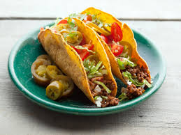

Easy Beef Tacos

Back to Home
Description
These easy beef tacos are quick to make and perfect for a weeknight dinner. The seasoned ground beef is packed into warm tortillas and topped with fresh lettuce, cheese, salsa, and sour cream for a simple meal that is always a hit.
Ingredients
- 1 pound ground beef
- 1 packet taco seasoning
- 2/3 cup water
- 8 small flour or corn tortillas
- 1 cup shredded lettuce
- 1 cup shredded cheddar cheese
- 1 diced tomato
- 1/2 cup salsa
- 1/2 cup sour cream
- Optional: sliced jalapeños or avocado
Steps
- Heat a skillet over medium heat and cook the ground beef until browned, breaking it apart as it cooks.
- Drain the excess grease, then stir in the taco seasoning and water.
- Simmer for 5 minutes until the meat is evenly coated and the sauce thickens slightly.
- Warm the tortillas in a dry skillet, microwave, or oven.
- Fill each tortilla with the seasoned beef.
- Top with lettuce, cheese, tomato, salsa, sour cream, and any other toppings you like.
- Serve immediately while warm.